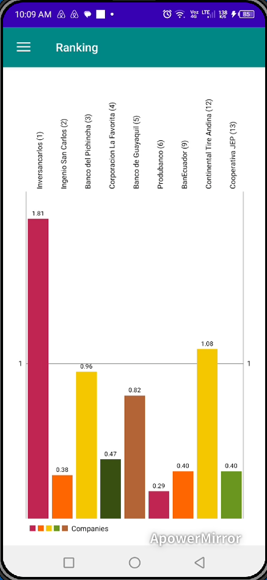
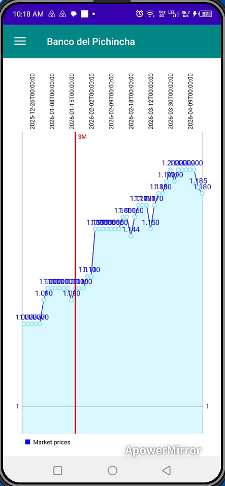

Interface de Connexion Mobile
Écran de connexion sécurisé donnant accès à l’environnement mobile de gestion de portefeuille.

Fenêtre de Synchronisation Desktop
Module de synchronisation reliant l’application mobile au logiciel desktop de gestion d’investissements.

Sélecteur des Actions Suivies
Interface spinner affichant la liste des actions suivies disponibles pour l’analyse mobile du portefeuille.

Tableau de Bord Mobile Principal
Vue d’ensemble de l’interface mobile incluant boutons de navigation, résumés financiers et informations du portefeuille.

Graphique en Barres des Dividendes
Visualisation en graphique à barres comparant les dividendes distribués par différentes actions du portefeuille.

Vue d’Ensemble des Transactions et Positions
Affiche les achats d’actions, ventes, dividendes en actions reçus et le nombre d’actions encore détenues.

Analyse du Classement des Actions
Classement des actions basé sur les évaluations et modèles de scoring générés par le logiciel desktop.

Prix du Marché vs Valeur Intrinsèque
Comparaison entre les prix moyens annuels du marché et les valeurs intrinsèques des actions suivies.

Analyse des Profits Simulés
Graphique affichant les profits simulés si toutes les positions du portefeuille étaient liquidées, basé sur les simulations du logiciel desktop.

Radar de Distribution des Dividendes
Graphique radar illustrant les distributions de dividendes sur plusieurs années pour l’action sélectionnée.

Graphique en Aires des Prix Quotidiens du Marché
Graphique en aires représentant les mouvements quotidiens des prix de marché de l’entreprise sélectionnée.
